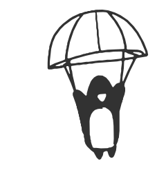

|

|
Salah Eddine Bouaa
Software Engineering Student @1337 (42 Network) | (University Mohammed VI Polytechnic)
Skills
- C, C++98/11, TypeScript, JavaScript and Bash
- Linux, POSIX, system programming
- TCP/IP networking, sockets
- Next.js, NestJS, PostgreSQL, Docker
Some Projects
- ft_irc - IRC server in C++98 with a single epoll event loop
- minishell - A Unix shell in C with pipes, redirections and signals
- Inception - Multi-container Docker infrastructure behind NGINX with TLS
- Philosophers - Dining philosophers with POSIX threads and mutexes
- cub3D - Wolfenstein-style ray-casting engine in C
- Wemeet - Social meetup platform (Next.js, NestJS, PostgreSQL)
- More - All projects, including the 1337 common core
|